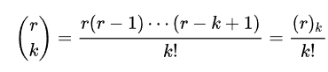
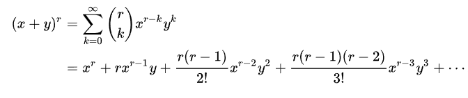
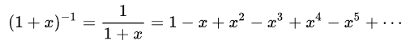
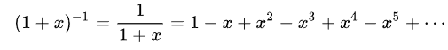
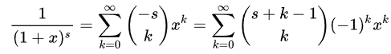

Њутнова биномна формула
Око 1665, Исак Њутн је прилагодио биномну формулу да би омогућио коричћење експонената који нису искључиво ненегативни
бројеви(ово је омогућило коричћење и комлексних бројева). У овој формули,коначна сума је замењена бесконачном.
Да би се ово омогућило мора се дати вредност биномним коефицијентима са неодређеним горњим индексом,што се не може учинити коришћењем стандардне формуле.
Али за неодређени број r може се дефинисати:


На пример ако је r=1/2:

На пример ако је r=-1,|x| < 1:

На пример ако је r=-s,|x| < 1:
